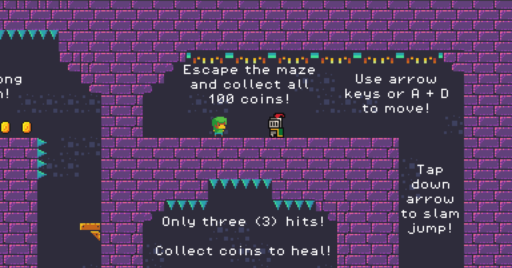
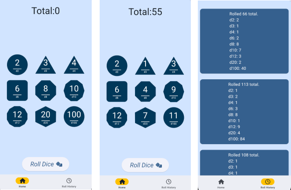
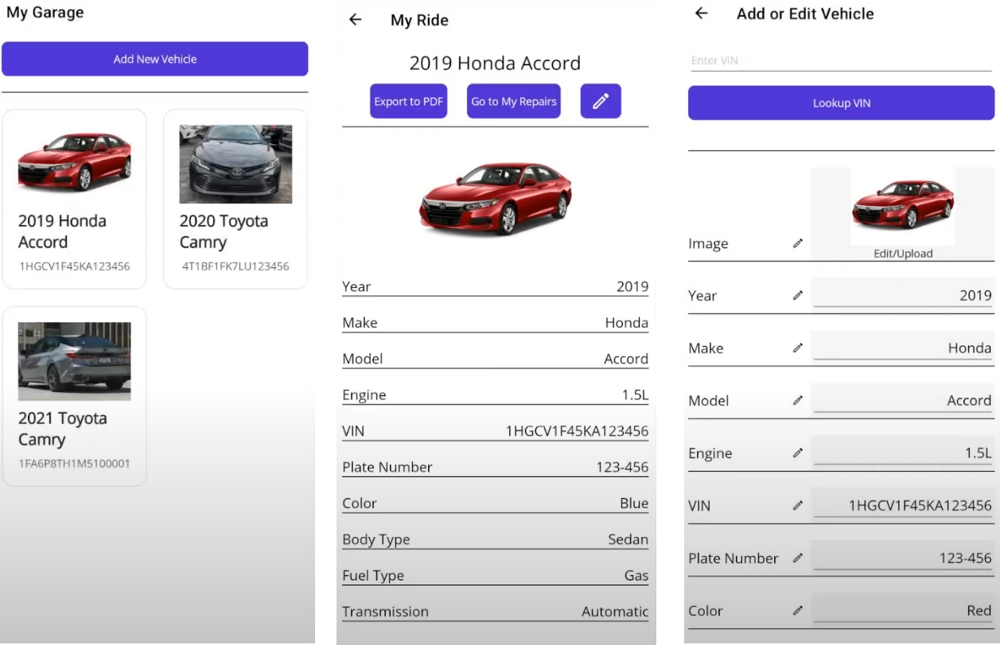
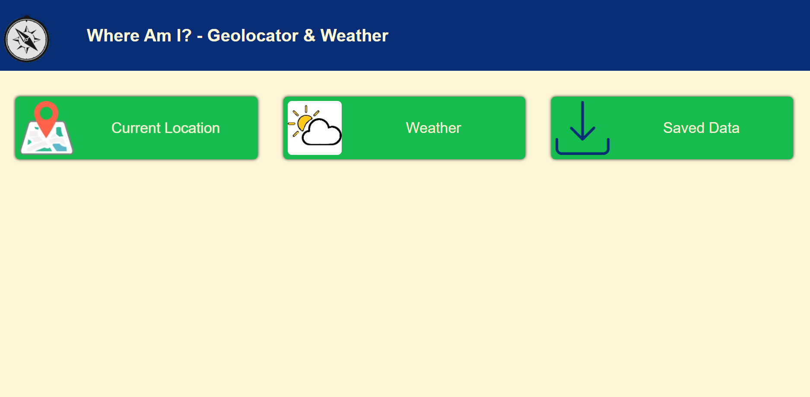
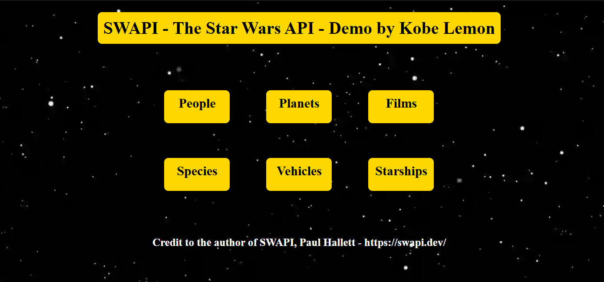
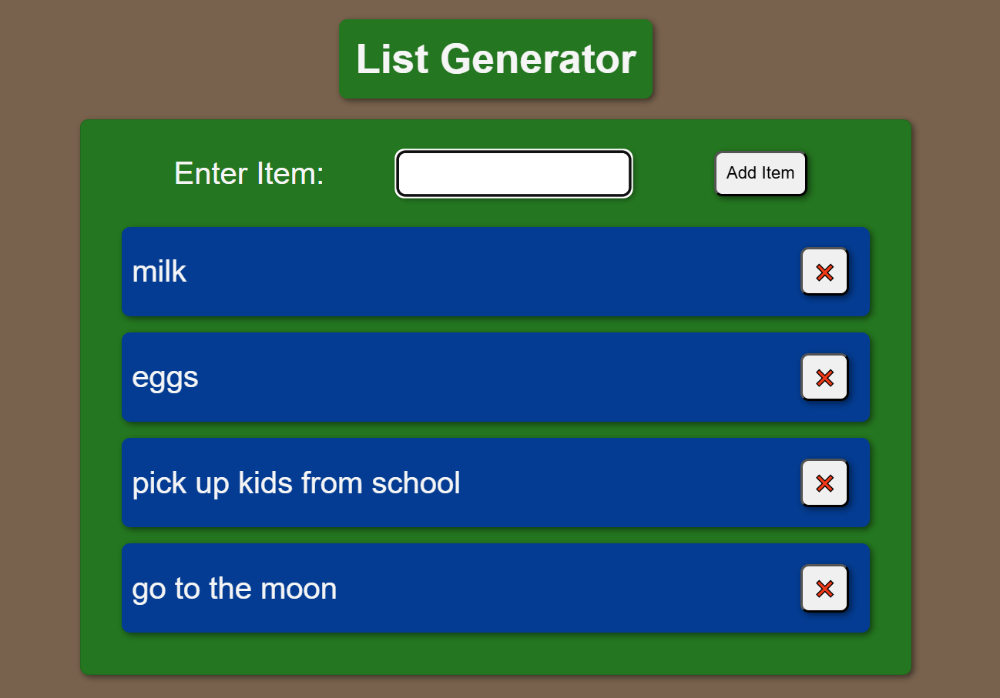
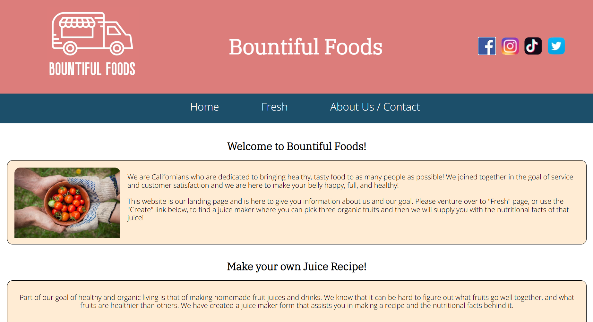
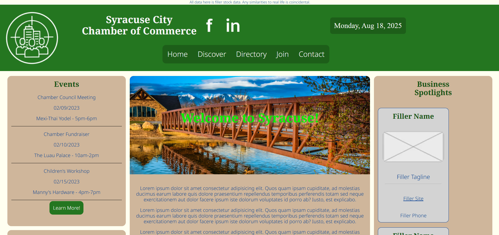
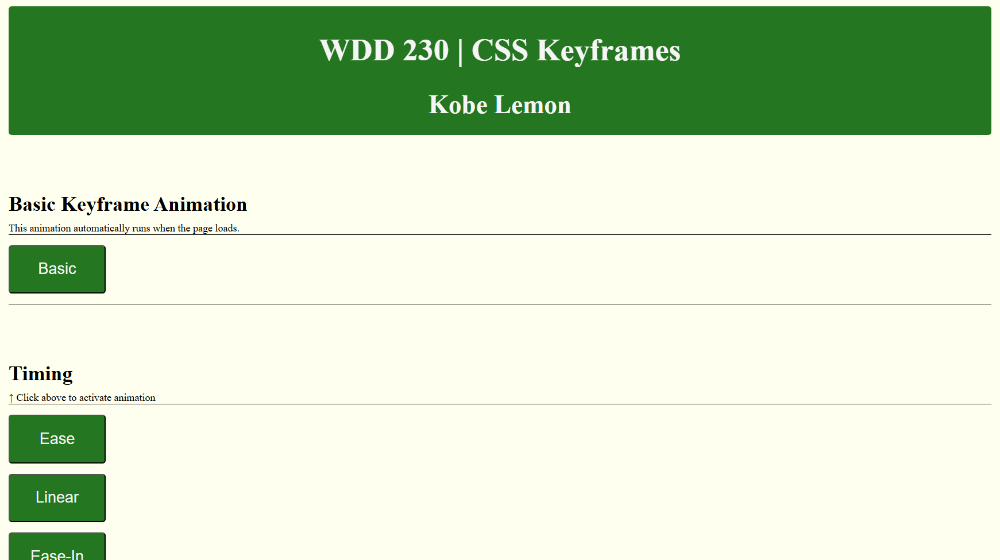

This is Maze Bouncer, a video game where you control a constantly bouncing ball as you navigate increasingly complex mazes. You wield your prodigious springiness to ricochet throughout labyrinths & find the exit!
This uses free assets from Brackey's "First Game in Godot" tutorial & from Itch.io, but the overall game itself is my creation. This is a proof-of-concept demo, design of final product will differ.
Technologies: Godot Game Engine, GDScript, C#, Audio/Visual Mixer

Tabletop Dice Roller is a Flutter/Dart mobile app that rolls dice for board games, tabletop roleplaying games, and more! From a d2 coin, all the way up to a d100 percentage dice, and everything in between. The numbers are randomized many times, simulate a real and accurate dice roll.
If you roll the same combo of dice often (4d6, 2d4, etc.), you can save dice profiles for easy later use. Just select your dice, then hit Roll! to let the dice decide your fate!
Technologies: Flutter, Dart, AndroidOS, Apple iOS

MechMate is a .NET MAUI mobile app where a user can view information about their vehicle, log past repair/service history, set future repair/service reminders, export vehicle info when selling the vehicle, and more! I am also working on a website version! Developed as a group senior project at BYU-Idaho, with Donald Felton & Goodness Arinzechukwu Okafor.
Technologies: C#, .NET MAUI, Xaml, JSON, AndroidOS, Apple iOS

Where Am I? - Geolocator & Weather uses the Geolocation API and the OpenWeather API to show your current location and the weather data for your current location. You can keep track of the location data & weather data by saving it into browser Local Storage. No personal data is saved/accessible elsewhere.
Technologies: HTML, CSS, JavaScript, Geolocation API, OpenWeather API, LocalStorage

Star Wars API - Demo App uses SWAPI - The Star Wars API to display information about various characters, planets, etc. from the Star Wars universe. NOTE: I am not affiliated with SWAPI - The Star Wars API or its author Paul Hallett, Disney, or Lucasfilms. I am not using this project for monetary gain. This project is soley meant to exercise and practice my coding skills. SWAPI License
Technologies: HTML, CSS, JavaScript, SWAPI - The Star Wars API

This is a simple custom list maker for things like a to-do list, shopping list, reminders, etc. Hosted as a live website, so you can make a list anywhere anytime!
Technologies: HTML, CSS, JavaScript

Bountiful Foods is a mock website I created while at BYU-Idaho. Interactive & designed to be a farmer's market website, showing the vision and directive with a clean UI. It uses the OpenWeather API to get accurate weather data for Carlsbad, CA.
Technologies: HTML, CSS, JavaScript, OpenWeather API

This is a mock Chamber of Commerce website I created while at BYU-Idaho, it is a mock platform where citizens can collaborate together, advertise their businesses, see information about events and local, and see the local news. It has an organized business directory and uses smart form logic to register mock users/businesses. I am not associated with Syracuse, UT government, this was solely for learning.
Technologies: HTML, CSS, JavaScript, OpenWeather API

This is a CSS Keyframes Presentation I created while at BYU-Idaho. It illustrates and displays the many things you can do with CSS and its Keyframes system. JavaScript is used for the button event listeners, but the keyframe animations are purely CSS.
Technologies: HTML, CSS, Keyframes, Animation, JavaScript